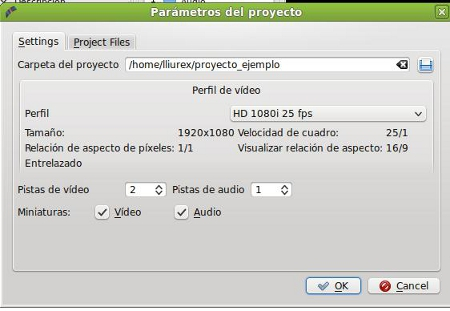
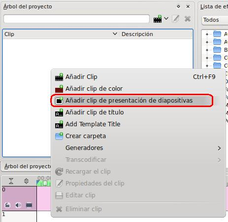
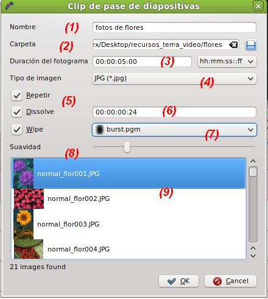
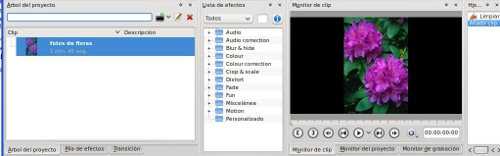
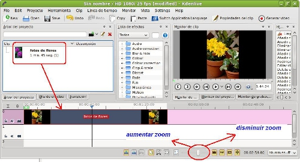

Edición de Audio y video
1.2. Presentación de diapositivas
Una vez disponemos de las imágenes en una carpeta determinada en nuestro ordenador procederemos a realizar, primeramente, un clip de presentaciones.
CREAMOS NUESTRO PROYECTO
- Abrimos nuestro Editor Kdenlive.
-
Creamos un nuevo proyecto (File / New) y le indicamos el perfil, la carpeta del proyecto (proyecto_ejemplo, en nuestro caso) e indicamos 2 pistas de video y 1 de audio con miniaturas en ambos casos.

- En el árbol de proyectos / boton derecho, añadimos un clip de presentación de diapositivas.

CLIP DE PASE DE DIAPOSITIVAS
-
Para la realización de nuestro clip automático debemos indicar el nombre (o dejar el que tiene por defecto) de nuestro clip (1).
- Indicar la carpeta en la que se encuentran las imágenes con las que realizaremos el clip (2). En la zona derecha dispone de un icono cuadrado que nos permite navegar por nuestro sistema de ficheros e indicarle la carpeta.

- La duración del fotograma (3) se refiere a la cantidad de tiempo (hh:mm:ss:dd) que durará nuestra imagen en la línea de tiempo. El programa también permite (zona derecha) indicar cantidad de fotogramas.
- Debemos indicar el tipo de imagen (JPG, JPEG, PNG, BMP, GIF, entre otras) que queremos utilizar en este clip (4).
- Si seleccionamos Repetir (5), al momento de editar en nuestra pista el clip, podemos estirarlo y hacer que dure más tiempo. Ejemplo: unpaso de fotos dura 30 segundos, si estiramos en la línea de tiempo (pista) se repetirá cuando deseemos.
- Dissolve (6) y Wipe (7) son transiciones entre las fotos. si pedimos disolver significar que antes de iniciar (debemos indicar el tiempo) una nueva foto se entremezcla con la anterior. Por su parte la transición Wipe nos permite realizar la transición entre imágenes realizando diversos efectos de entrada que podemos elegir. El apartado suavidad, nos permite controlar el grado de mezcla entre la foto anterior y la siguiente.
- Una vez finalizada la configuración del clip, aceptamos (OK) y dispondremos de un clip en el árbol de proyectos.
Nota: podemos elegir una o varias de las transiciones.
EDITANDO NUESTRO CLIP DE FOTOS
- En el árbol de proyectos del Kdenlive nos encontramos con el clip creado en el paso anterior.

- Ubica el clip de diapositivas en una de las pistas de video y audio. Si el total de fotografías ocupa mucho espacio en la línea de tiempo, en la zona inferior (barra de estado) disponemos de un zoom para aumentar o disminuir el tamaño de las pistas.

- Utiliza el monitor del proyecto para reproducir el resultado actual de nuestra presentación.
- Guarda el proyecto como proyecto3.
| Con estos pequeños pasos ya podríamos generar un video con nuestras fotos en una presentación. |
Jo.R.C.A. 2004 - 2011

Edición de Audio y Video con Software Libre by José Ramón Cerdeira Alonso is licensed under a Creative Commons Reconocimiento-No comercial-Compartir bajo la misma licencia 3.0 España License